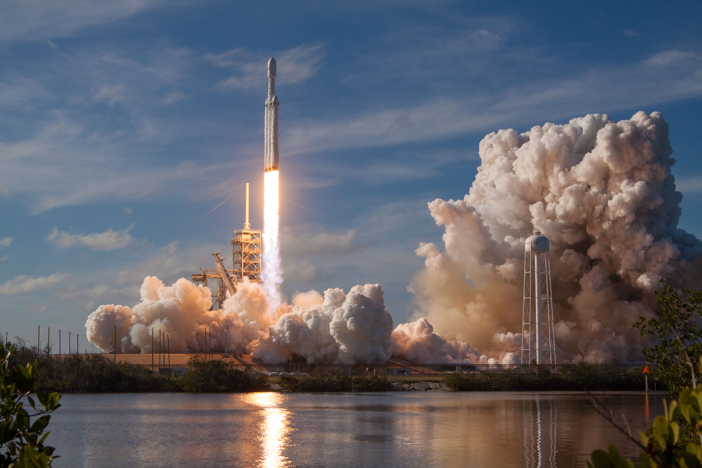
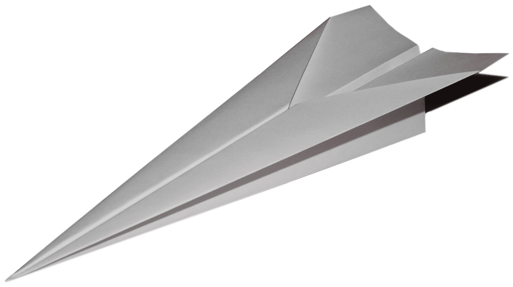

Building a Satellite Isn't Rocket Science
Consider this picture here.

How would you describe it?
For me, and I’m sure it is for many of you as well, this evokes awe. If I
told you to start building this spacecraft today, you might think of this
as a nearly impossible task. It would require decades of study, you say!
Satellites are made by PhDs at ISRO and NASA, right? We’re just undergrads,
no way we’re going to build a satellite.
Consider this picture now.

Looks easy, doesn’t it? Now remember the time when you were a child,
wanting to make a paper plane for the first time. You were not intimidated
by the complexity of making one for the first time; rather, all you could
see was the paper plane flying.
The night sky has amazed humans for thousands of years. Only in the last
60 years, we have been able to actually send something across our
atmosphere. 60 years! That’s a tiny fraction of the time we have been
around on this planet.
And now, we are at a point where not only do countries have their own
space programs, but universities do too! Spaceflight has advanced so much
and become so accessible that even undergraduates are able to build and
launch their own satellites, and make successful contact in orbit.
There are several examples of such missions. One example is that of Team
Anant, the student satellite program of the Birla Institute of Technology
and Science (BITS), Pilani, a university in India that is building a
Hyperspectral Imaging Nanosatellite (HySIN). Having started in 2013, this
team is working closely with the Indian Space Research Organization (ISRO)
to launch a 3U cubesat by an expected launch date in 2021. The cubesat has
an FPGA to compress the huge hyperspectral images that it captures, which
are intended to be used for ocean CO2 content, but otherwise have a
plethora of applications. I was a member of the on-board computer
subsystem of the satellite, and in that capacity, I’m writing this article
to tell you how accessible space has become.
Another example is that of Pratham, the microsatellite launched by the
Indian Institute of Technology (IIT), Bombay, in September 2016. It
weighed just 10 kilograms, and its payload was intended to measure the
Total Electron Count (TEC) of the atmosphere. Like most university
satellite missions, including Team Anant, one of the primary aims of the
project was the educational experience it provided.
There was a time when satellites weighed thousands of kgs, were as big as
buses, took decades to complete, millions of dollars in funding, and most
importantly, one rocket launch per satellite. That’s like using one Boeing
747 for just one passenger. Which is a great luxury if you were flying
first class, but you have to agree, it is a wastage of our precious
resources.
And until just four years ago, that one aeroplane was never reused, it was
sent as scrap metal after just one flight. The second aspect changed when
SpaceX became the first launching entity to safely land a rocket in
December 2015.
Around the year 2000, the first nano satellites began appearing. Having
small satellites means you can cramp in many satellites. This is testified
by the fact that ISRO was able to launch 104 satellites together in
February 2017, 103 of them being nano satellites.
A question that often comes up at this point, is: why spend so much money
on sending something so far away, when right here on Earth, there are
much more pressing issues, like wildlife conservation and global
warming? Well that’s because satellite sensors can be used to help these
causes in ways that are much more efficient than before. And by sensors,
I don’t just mean cameras. They could be radar, for that matter. Or
just any experimental equipment. For example, the sensor in our
satellite is a special camera that captures images in the visible and
IR spectra. That means we get so much more information from an image.
Regular cameras, like the ones in your phones, capture images in red,
green and blue wavelengths, and combine them. Our hyperspectral imager,
takes images in the visible, as well as the IR region. This means that
we can use the insane amounts of data for a huge spectrum (pun intended)
of applications. Applications like atmosphere CO2 monitoring,
crop management, and ocean life monitoring.
So, what does it take to build a satellite? The following basic subsystems:
a computer, the power source, the control of the satellite, the structure,
the antenna, and of course, the payload, which is what the satellite
achieves. A camera is one of the most common payloads.
And how can you build one? If you’re a college student, most labs that your
institute has are sufficient to actually build a satellite. Most skills
that you learn in regular labs, as part of course work, are enough to
understand how systems in space work. There are multiple programs that
provide financial aid, including free launches to student-built
satellites. Almost all space agencies like ISRO, NASA, ESA, and JAXA
provide financial and technical support for student satellite teams.
And the remaining requirements are easily fulfilled doing some
research.
For example, I never studied aerospace engineering, or physics, but have a
degree in electronics and experience with programming. I could still work
on a satellite because I programmed how the satellite should behave in
space. My knowledge of electronics came in handy, too, because space is
a harsh environment. So one needs to be careful of radiation damaging
one’s electronics. Of course, a certain minimum amount of space
knowledge is required, which I acquired by reading research articles.
And if you’re not a student, but just a hobbyist, all you need is your
garage to build one.
Literally. Take the example of Planet Labs. Theirs is a classic Silicon
Valley garage story. Today, they have close to a hundred satellites in
orbit.
If it still seems difficult to start building a satellite in your garage,
here’s how you can get started:
you need a program running on hardware to make any system work. A satellite
is like any other system. Since both of these are available in open
source, it is easy for anyone with internet access to make their
satellite work, and more importantly, for experts to contribute to this
open resource. This spirit of openness in satellite building is promoted
by conferences such as the Open Source Cubesat Workshop, which can be
attended by anyone free of charge.
I’ve always believed that anyone can study any topic, given the abundance
of resources these days. People have sent humans to the moon and back
(alive, mind you) using computers that had lesser processing power than
modern calculators. Now, it is exponentially easier, easy enough to make
your own space contraption aided with the power of the internet.
And if you feel that what you have already studied is of no use, think
again. Sending something to orbit is a highly interdisciplinary project,
with tasks ranging from mathematics to computer science to biology to
economics.There’s enough space for everyone.
However, after all has been said and done, it still is a challenging task
to get something to space. But things have changed radically in the past
few years. Remember that time when you first built the paper plane. And
keep in mind that if you could do that without intimidation then, then,
one day, soon enough, you can certainly reach the stars. Literally.